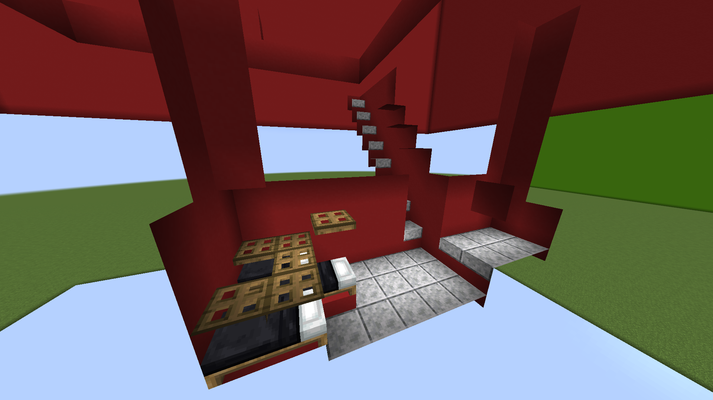
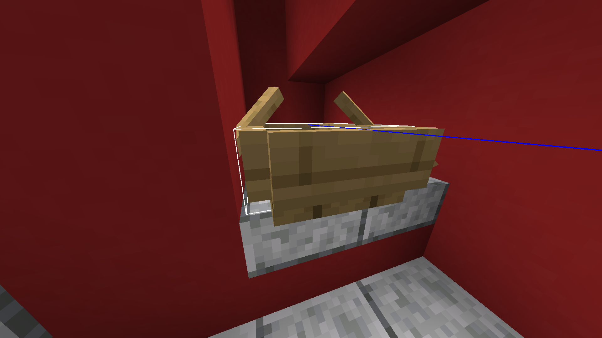

Day 1 iron farm. In the ground.
Only active at night.
If iron golems spawn outside of the killing chamber, surround the outside with slabs or torches.
The resources needed to build the farm are located in the chest above.
Step 1
Dig a 9x9, 1-block-deep hole.
In the center, dig a 7-deep hole and place a trapdoor at the bottom.
Expand the hole to a 3x3 area that is 7 blocks long in total, with the trapdoor as the shorter edge.
On the opposite wall where the trapdoor is, on the right line, create a 2x2x2 area, and then dig the top center ceiling for 2 blocks long.
Step 2
Where the trapdoor is placed, put a bed with the pillow facing the 2x2x2 extension and two others on either side.
Place a temporary block on the center bed's pillow and put a trapdoor on top of it.
Then, place five trapdoors on top of the remaining bed parts.
Dig the floor between the beds and the 2x2x2 extension, replacing them with slabs.
On the floor of the extension, also place slabs.
Then, dig a staircase to the surface near the extension and cover each step with a slab.

Step 3
Place a boat in the extension and ensure that its hitbox ends before the final pixel.

Step 4
Lure 3 villagers into their beds at night and waterlog the trapdoor in the middle.
Then lure a zombie into the boat and block the villagers' sight from it.
Step 5
On the surface, in the 9x9 hole, place water in the corners.
Block the hole in the center with a hopper and connect it to a chest.
1 block above the hopper, place an opened fence gate; on its sides, place 4 signs.
On top of these signs, place another 4, and on the fence gate, place lava.
Now, remove the blocks covering the villager, and at night, iron golems should start spawning.